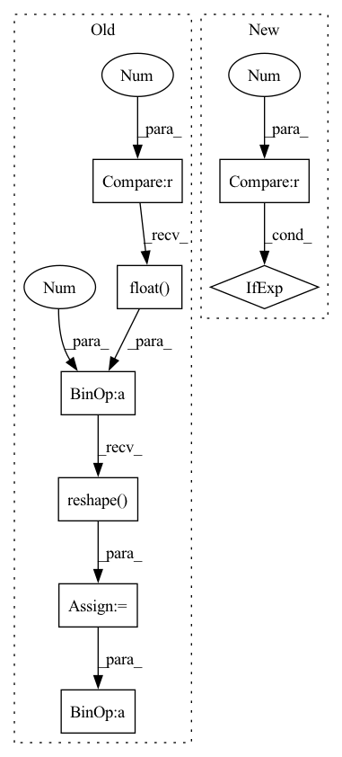

Pattern ID :15572

Before Change
model_mean, _, model_log_variance = self.p_mean_variance(x=x, t=t, clip_denoised=clip_denoised)
noise = torch.randn_like(x)
// no noise when t == 0
nonzero_mask = (1 - (t == 0).float()).reshape(b, *((1,) * (len(x.shape) - 1)))
return model_mean + nonzero_mask * (0.5 * model_log_variance).exp() * noise
@torch.no_grad()
def p_sample_loop(self, shape):
After Change
b, *_, device = *x.shape, x.device
batched_times = torch.full((x.shape[0],), t, device = x.device, dtype = torch.long)
model_mean, _, model_log_variance = self.p_mean_variance(x = x, t = batched_times, clip_denoised = clip_denoised)
noise = torch.randn_like(x) if t > 0 else 0. // no noise if t == 0
return model_mean + (0.5 * model_log_variance).exp() * noise
@torch.no_grad()
In pattern: SUPERPATTERN
Frequency: 3
Non-data size: 8
Instances
Fragment ID: 52615322
Project Name: lucidrains/denoising-diffusion-pytorch
Commit Name: 931a5af2c3271a7f12a951763cd9c68f9ea49a23
Time: 2022-07-09
Author: lucidrains@gmail.com
File Name: denoising_diffusion_pytorch/denoising_diffusion_pytorch.py
M Class Name: GaussianDiffusion
N Class Name: GaussianDiffusion
M Method Name: p_sample(4)
N Method Name: p_sample(4)
M Parent Class: nn.Module
N Parent Class: nn.Module
M File Name: denoising_diffusion_pytorch/denoising_diffusion_pytorch.py
N File Name: denoising_diffusion_pytorch/denoising_diffusion_pytorch.py
M Start Line: 486
M End Line: 492
N Start Line: 516
N End Line: 521
'>
Before Change
x=x, t=t, clip_denoised=clip_denoised, condition_x=condition_x)
noise = noise_like(x.shape, device, repeat_noise)
// no noise when t == 0
nonzero_mask = (1 - (t == 0).float()).reshape(b,
*((1,) * (len(x.shape) - 1)))
return model_mean + nonzero_mask * (0.5 * model_log_variance).exp() * noise
@torch.no_grad()
def p_sample_loop(self, x_in):
After Change
def p_sample(self, x, t, clip_denoised=True, condition_x=None):
model_mean, model_log_variance = self.p_mean_variance(
x=x, t=t, clip_denoised=clip_denoised, condition_x=condition_x)
noise = torch.randn_like(x) if t > 0 else torch.zeros_like(x)
return model_mean + (0.5 * model_log_variance).exp() * noise
@torch.no_grad()
'>
Fragment ID: 52615323
Project Name: janspiry/image-super-resolution-via-iterative-refinement
Commit Name: 12c2447fe9d989a51a1674b23fbb225c783186e5
Time: 2021-08-03
Author: lw_jiang@foxmail.com
File Name: model/modules/diffusion.py
M Class Name: GaussianDiffusion
N Class Name: GaussianDiffusion
M Method Name: p_sample(5)
N Method Name: p_sample(6)
M Parent Class: nn.Module
N Parent Class: nn.Module
M File Name: model/modules/diffusion.py
N File Name: model/modules/diffusion.py
M Start Line: 176
M End Line: 184
N Start Line: 156
N End Line: 157
'>
Before Change
x=x, t=t, clip_denoised=clip_denoised, condition_x=condition_x)
noise = noise_like(x.shape, device, repeat_noise)
// no noise when t == 0
nonzero_mask = (1 - (t == 0).float()).reshape(b,
*((1,) * (len(x.shape) - 1)))
return model_mean + nonzero_mask * (0.5 * model_log_variance).exp() * noise
@torch.no_grad()
def p_sample_loop(self, x_in):
After Change
def p_sample(self, x, t, clip_denoised=True, condition_x=None):
model_mean, model_log_variance = self.p_mean_variance(
x=x, t=t, clip_denoised=clip_denoised, condition_x=condition_x)
noise = torch.randn_like(x) if t > 0 else torch.zeros_like(x)
return model_mean + (0.5 * model_log_variance).exp() * noise
@torch.no_grad()
'>
Fragment ID: 52615321
Project Name: janspiry/image-super-resolution-via-iterative-refinement
Commit Name: e4bf6add27ee36067514a0b3debcd3bf98dbaa17
Time: 2021-08-03
Author: jiangliangwei@tetras.com
File Name: model/modules/diffusion.py
M Class Name: GaussianDiffusion
N Class Name: GaussianDiffusion
M Method Name: p_sample(5)
N Method Name: p_sample(6)
M Parent Class: nn.Module
N Parent Class: nn.Module
M File Name: model/modules/diffusion.py
N File Name: model/modules/diffusion.py
M Start Line: 176
M End Line: 184
N Start Line: 156
N End Line: 157